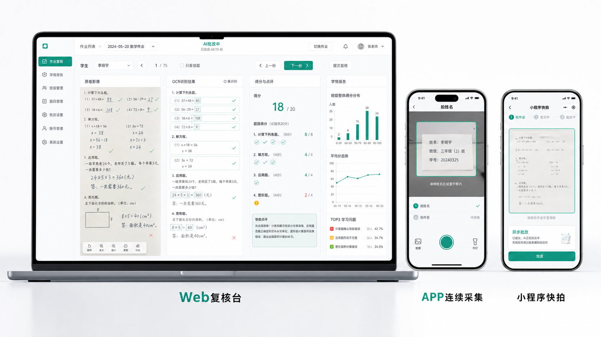

不转嫁采集负担
学生仍写纸质作业，采集入口集中在教师端，符合校园真实管理场景。

2026 AI 先锋未来人才大赛 · 视源股份命题
补齐希沃生态里的“评”环节。
老师保留纸质作业习惯，用手机、小程序、Web 或视频展台完成集中采集；AI 在后台完成题目切分、手写识别、过程判分与学情诊断，最后生成下一节讲评课。
评委第一个问题：为什么做这个？
希沃白板、易课堂和 AI 教学空间已经覆盖“教”和“学”的大量场景，但日常纸质作业里的过程性评价仍然分散、滞后、难回到课堂。希沃智教π把这部分数据变成可复核、可追溯、可进入讲评课的教学资产。
学生仍写纸质作业，采集入口集中在教师端，符合校园真实管理场景。
每个分数都关联原图、OCR 文本、题框、步骤分和置信度。
结果继续生成讲评顺序、典型错题、变式练习和飞书复核任务。
真实教学现场
评委看到的不是普通 OCR Demo，而是一个面对真实作业本的系统设计：先建标准，再异步采集，低置信结果交给教师复核。
姓名栏、封面、试卷头都可能成为身份入口，低置信匹配必须人工确认。
双栏、斜拍、跨区作答、作文和过程题需要多区域题目切分能力。
AI 建议分不是终点，教师能看到扣分原因、步骤证据和复核优先级。
整体解决方案
系统以 APP / 小程序 / Web / 视频展台为入口，以 AI 批改中台为核心，连接希沃白板、易课堂、AI 教学空间和飞书协同。

每一步只让老师完成一个动作，弱网可缓存，失败可补拍。
增强版 QuestionSplit 保留原图证据，Rubric 由教师确认后再批量复用。
老师优先处理异常项，再把结果导向下一节希沃课堂。
树状产品架构
图谱展示产品不是一个孤立工具，而是围绕教学闭环组织的 AI Native 系统。悬停或点击任一分支可查看职责。
教师在多端完成低门槛采集，系统把图片、身份、题目和作答绑定成可批改任务。
流程演示
采集动作和批改动作异步并行，前台不阻塞老师；后台把低置信、主观题和异常分收束到复核队列。
Step 01
系统先识别空白题目和答案册，产出题框、知识点、答案解析和 Rubric 草稿，避免直接盲判学生作答。
从采集到讲评
每个节点都有可见状态：作业如何进入系统、AI 如何处理、老师在哪里复核、结果如何回到课堂。
希沃 / 飞书融合
智教π把“评”的结果接回希沃课堂，并通过飞书把复核、提醒和教研协同流转起来。
共性错题、板书结构、讲评顺序直接进入课堂。
讲完之后继续练，形成“评后巩固”。
作业、学生、题目、错因、复核状态结构化存档。
老师可直接询问“本次最该讲哪三题”。
预期效果
系统指标围绕采集效率、复核时间、AI 采纳率和讲评课复用率设计，确保 Demo 讲得清，也能继续落地。